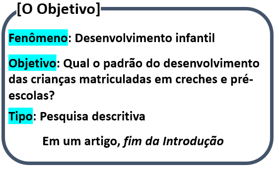
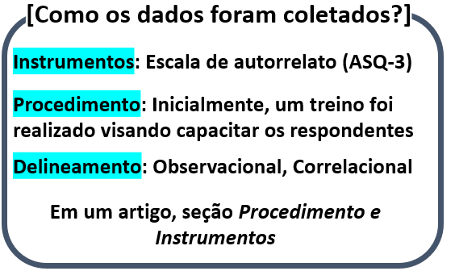
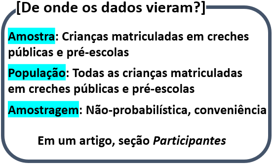
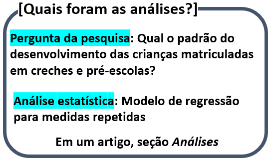
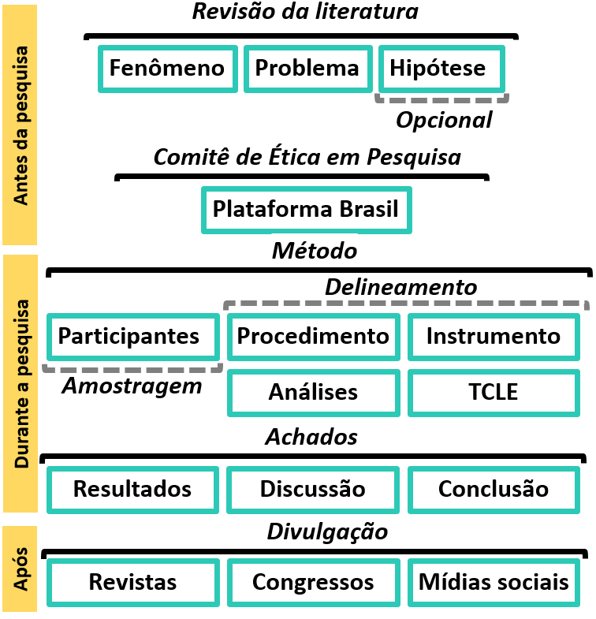

Cap. 8 Um exemplo real de pesquisa
Objetivos do capítulo
1. Apresentar uma pesquisa previamente publicada
2. Discutir as principais características processuais de uma pesquisa
3. Apresentar a relação entre objetivo, delineamento e coleta de dados
4. Introduzir à forma de divulgação dos resultados
É particularmente difícil ter noção de todas as etapas envolvidas em uma pesquisa na ausência de uma apresentação concreta. Estudos reais, previamente conduzidos e publicados, tendem a fornecer uma base sólida que auxilia na integração dos aspectos conceituais e analíticos descritos no decorrer dos capítulos anteriores.
De maneira geral, uma pesquisa é composta por 3 macro etapas (Mayer, 2007). A primeira se inicia antes mesmo da realização da coleta de dados e é voltada à escolha do objeto ou fenômeno de interesse, bem como da definição dos objetivos, das principais perguntas e do delineamento. Com frequência, esta primeira macro etapa demanda muito tempo para escrita de um projeto e se encerra com a sua submissão a um Comitês de Ética em Pesquisa (CEPs), tal como a Plataforma Brasil.
A segunda macro etapa se relaciona com a execução da pesquisa. Nesta etapa, há processos que vão desde a coleta de dados até a escrita de um relatório formal, com resultados e discussões. Com frequência, a apresentação dos resultados a revistas científicas marca o fim desta segunda macro etapa.
Finalmente, a terceira macro etapa somente se inicia após a pesquisa ter sido encerrada e é intrinsicamente marcada pela divulgação dos resultados por diferentes meios, incluindo mídias sociais.
Neste capítulo, a pesquisa intitulada “A Longitudinal Study of Child Development in Children Enrolled in Brazilian Public Daycare Centers” será apresentada. Ela foi publicada em 2018 e foi assinada por mim (Luis Anunciação), Jane Squires e J. Landeira-Fernandez. A publicação foi feita em formato de artigo, em que estão presentes as seguintes seções: (1) introdução, (2) método - participantes, procedimentos, instrumentos, análises, consentimento ético - (3) discussão e (4) conclusão.
8.1 O que será pesquisado
A primeira etapa de toda pesquisa é a definição clara do fenômeno ou objeto a ser investigado. Essa etapa é fundamental e permitirá criar os objetivos, problemas e eventuais hipóteses de pesquisa.
É possível ter interesse em fenômenos variados e isso costuma ser atrelado à área do investigador. Por exemplo, físicos podem ter interesse em estudar a gravidade, enquanto sociólogos as torcidas organizadas e economistas a tomada de decisão. A principal característica para definição do fenômeno é a sua viabilidade de estudo através do método científico. Caso isso seja muito limitado ou inviável, mudanças deverão ser implementadas.
Após conseguir definir adequadamente o fenômeno, a maneira pela qual a pergunta será feita irá indicar o tipo ou nível da pesquisa, que poderá ser exploratória, descritiva ou explicativa, como previamente ilustrado no capítulo sobre aspectos gerais. Em síntese, pesquisas exploratórias não apresentam uma hipótese claramente definida, enquanto pesquisas descritivas tendem a investigar assuntos em que já um maior conhecimento científico e pesquisas explicativas formalmente se propõem a testar hipóteses. Em muitas pesquisas, há perguntas (ou objetivos) gerais ou primários e específicos ou secundários.
Na escrita de um trabalho científico, o objetivo, os problemas traçados e as eventuais hipóteses a ser testadas devem ser colocados ao fim da introdução.
Nesta pesquisa que está sendo utilizada como exemplo, o interesse foi avaliar aspectos do desenvolvimento infantil. O objetivo primário foi verificar qual era o padrão de desenvolvimento de crianças matriculadas em creches e pré-escolas, em uma pesquisa descritiva. De maneira secundária, testamos o efeito da idade e do sexo em alguns marcadores específicos do desenvolvimento.

8.2 Como os dados serão coletados
Ao definir o fenômeno de interesse, bem como o objetivo e as principais perguntas e hipóteses, é necessário definir o delineamento. o delineamento e o objetivo da pesquisa são absolutamente relacionados, mas o primeiro irá caracterizar todo o processo de aquisição de dados, bem como as maneiras pelas quais as variáveis envolvidas serão controladas. É importante atentar que toda pesquisa precisa ser apreciada por um comitê de ética. Legalmente, os dados só podem ser coletados após a aprovação da pesquisa e concordância e assinatura de cada um dos participantes ao Termo de Consentimento Livre e Esclarecido (TCLE).
Em um manuscrito, aspectos do delineamento costumam ser apresentados na seção intitulada “Método,” nas subseções “Procedimento” e “Instrumentos.”
Nesta pesquisa de exemplo, os dados foram coletados a partir de escalas psicológicas de auto/heterorrelato. Essas escalas já haviam sido intensamente estudadas e houve também uma intensa capacitação entre todos os envolvidos na etapa da coleta de dados.

8.3 De onde os dados vêm
Na maioria das pesquisas feitas em Psicologia, a amostra é formada por seres humanos. Como é muito difícil conseguir fazer uma pesquisa que contemple toda a população de interesse, é necessário definir claramente como o processo de amostragem será realizado.
A amostragem é a área da estatística que se ocupa ao estudo das diferentes formas de obter amostras ou subconjuntos de um conjunto maior. Existem técnicas probabilísticas e não-probabilísticas para composição da amostra e cada uma delas tem pontos positivos e possíveis limitações.
Apesar de frequentemente ignorada em Psicologia, existem duas condições absolutamente vitais na definição da técnica de amostragem. Primeiro, por via de regra, as análises estatísticas assumem que os dados vieram de uma amostra aleatória. Segundo, a capacidade de generalizar os resultados obtidos em uma pesquisa, ou seja, a validade externa, é intrinsicamente dependente da do tipo de amostragem utilizado.
Em um manuscrito, os voluntários amostrados e seu relacionamento com a população de onde eles foram retirados tendem a ser apresentados na seção Participantes.
Esta pesquisa apresentada contou com uma amostra por conveniência, o que significa que os participantes foram selecionados de maneira não-probabilística em que aspectos de acesso e contato foram predominantes.

8.4 As análises
As análises estatísticas fazem a interface entre modelos científicos e modelos probabilísticos e fazem fronteira entre a pergunta que o pesquisador fez e as respostas que os dados podem possibilitar. Todos os resultados obtidos na uma pesquisa depende do conjunto de análises feitas. Caso elas sejam alteradas, os resultados também tendem a ser diferentes.
As análises apresentam pressupostos tanto para sua execução, como para interpretação dos resultados. Dessa maneira, a principal característica das análises estatísticas é a adequação de seus pressupostos. Antes da interpretação de qualquer resultado, é necessário realizar uma etapa de diagnóstico dos modelos estatísticos.
Em manuscrito, as análises são apresentadas na seção Análise estatística de dados. Por sua vez, os resultados são apresentados em uma seção com o mesmo nome.
Nessa pesquisa, modelos lineares foram desenvolvidos para verificar o desenvolvimento infantil, bem como testar o possível efeito da idade e do sexo no desenvolvimento de algumas características.

8.5 Os achados
Por via de regra, uma pesquisa é feita para responder à uma pergunta. Essas respostas tendem a ser listadas na seção intitulada “Resultados” e precisam ser discutidas. Essa discussão é fundamental não apenas para revisitar as motivações que desencadearam a pesquisa, mas também para apresentar se o objetivo do trabalho foi alcançado e se as hipóteses estipuladas puderam ser testadas. É importante lembrar que a inferência estatística não testa diretamente a hipótese do pesquisador e, portanto, termos como “foi provado” devem ser evitados.
Em um manuscrito, a seção intitulada “Discussão” é utilizada para contextualizar todos os resultados e discuti-los.
Nesta pesquisa, foi possível verificar que as crianças matriculadas em creches e pré-escolas estavam se desenvolvendo de acordo com o esperado para sua faixa etária. Este achado foi especialmente importante, uma vez que parte considerável dessas crianças estava inserida em locais com uma grande fragilidade e vulnerabilidade social.
8.6 Divulgação do estudo
A divulgação de um estudo científico é tão importante (e as vezes mais difícil) quanto seu planejamento e execução. É pela publicização do trabalho que os achados se tornam acessíveis a outros profissionais e acadêmicos. O primeiro local em que a divulgação ocorre é na própria revista em que a pesquisa foi publicada. Trabalhos de acesso livre e gratuito (open access) tendem a ser mais visualizados do que aqueles pagos. Apresentação dos resultados em congressos, simpósios costuma ser bastante benéfico e, finalmente, as mídias sociais tem se mostrado um terreno bastante promissor para divulgação dos resultados.
8.7 Fluxograma
A imagem a seguir visa sumarizar as etapas apresentadas.

8.8 Resumo
- A pesquisa é um processo mais amplo do que apenas a coleta e a análise de dados
- O planejamento contempla aspectos relacionados à amostragem, delineamento e análise
- A divulgação dos resultados é uma etapa fundamental e, eventualmente, tão difícil quanto à execução da pesquisa